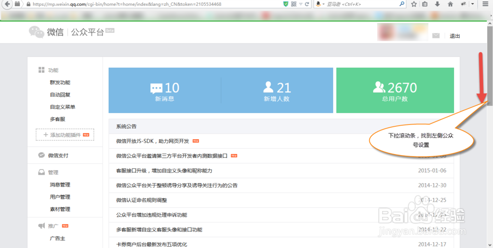
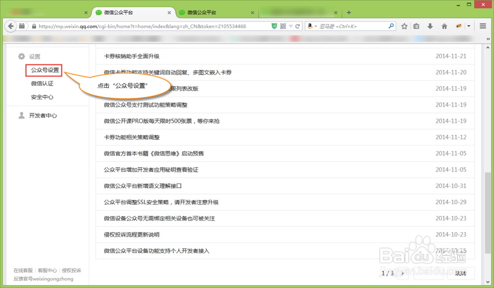
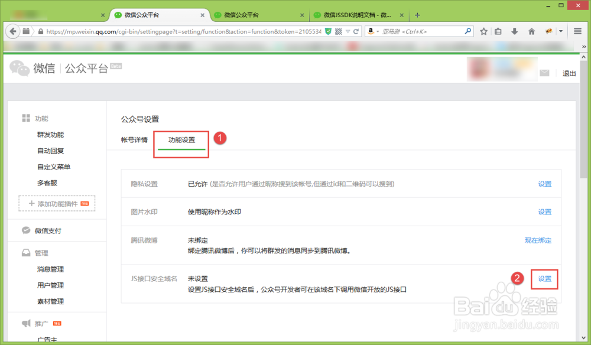
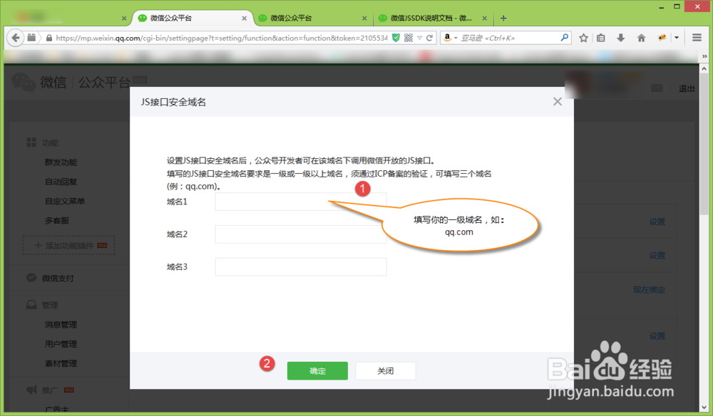
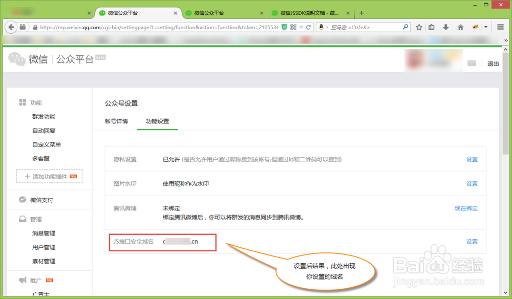
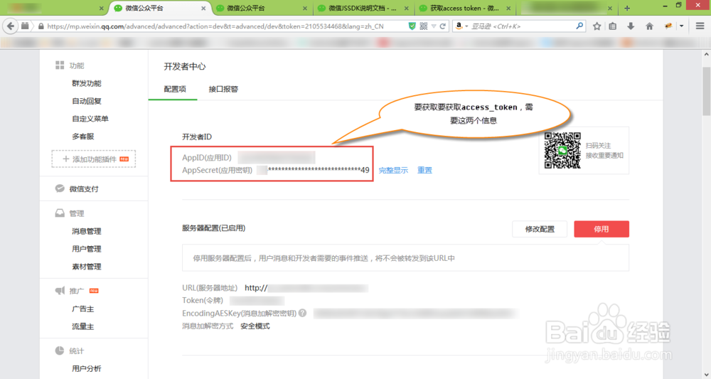

微信JS-SDK分享功能
在线调试工具
http://mp.weixin.qq.com/debug/cgi-bin/sandbox?t=jsapisign
步骤1 生成签名
登录你的微信平台，点击“公众号设置”。
 点击“功能设置”，然后点击“设置”。
设置JS接口安全域名。这里填写的是一级域名，不带www和http。最多可以设置三个域名。设置完后点击确定。（多说一句，相比以前的分享没有任何域名限制，这里设置安全域名，目的是为了当发现此公众平台发现诱导分享行为时，可以根据此域名追溯到所有分享出去的链接，以及通过这些链接增加的粉丝。这样，微信就可以牢牢控制了你的微信平台，一旦发现违规，让分享链接失效，删除掉诱导行为增加的粉丝，是瞬间就可以完成的。因此，微信平台的开发者，一定要合理来使用分享功能，不要因小失大。等到你的微信平台被封，估计哭都来不及）
 在开发者中心中获取你的AppID和AppSecret，接下来在获取令牌时，需要这两个信息。
php代码
//add by carter 获得微信token; $access_token = access_token($GLOBALS['db']); //通过token获得ticket $url2 = sprintf("https://api.weixin.qq.com/cgi-bin/ticket/getticket?access_token=%s&type=jsapi",$access_token); $res = file_get_contents($url2); $res = json_decode($res, true); $wxticket = $res['ticket']; $wxnonceStr = "qlqlqlqlql"; $timestamp = time(); $url='http://'.$_SERVER['HTTP_HOST'].$_SERVER['PHP_SELF'].'?'.$_SERVER['QUERY_STRING']; $wxOri = sprintf("jsapi_ticket=%s&noncestr=%s×tamp=%s&url=%s", $wxticket, $wxnonceStr, $timestamp,$url); $wxSha1 = sha1($wxOri); //传值给页面 $smarty->assign('wxnonceStr',$wxnonceStr); $smarty->assign('ticket',$wxSha1); $smarty->assign('wxtime',$timestamp);
页面
<script type="text/javascript" src="http://res.wx.qq.com/open/js/jweixin-1.0.0.js"></script> <script> wx.config({ debug: false, // 开启调试模式,调用的所有api的返回值会在客户端alert出来，若要查看传入的参数，可以在pc端打开，参数信息会通过log打出，仅在pc端时才会打印。 appId: 'wx4c0b5cba4ab9d642', // 必填，公众号的唯一标识 timestamp: {$wxtime}, // 必填，生成签名的时间戳 nonceStr: '{$wxnonceStr}', // 必填，生成签名的随机串 signature: '{$ticket}',// 必填，签名，见附录1 jsApiList: ['onMenuShareTimeline', 'onMenuShareAppMessage'] // 必填，需要使用的JS接口列表，所有JS接口列表见附录2 }); var descContent = '{$page_title} - {$shop_name}'; var shareTitle = '{$page_title} - {$shop_name}' var lineLink = window.location.href; var imgUrl =$('#goodpic').attr('src'); wx.ready(function(){ // 获取“分享到朋友圈”按钮点击状态及自定义分享内容接口 wx.onMenuShareTimeline({ title: shareTitle, // 分享标题 link:lineLink, imgUrl: imgUrl // 分享图标 }); // 获取“分享给朋友”按钮点击状态及自定义分享内容接口 wx.onMenuShareAppMessage({ title: shareTitle, // 分享标题 desc: descContent, // 分享描述 link:lineLink, imgUrl: imgUrl, // 分享图标 type: 'link', // 分享类型,music、video或link，不填默认为link }); }); </script>